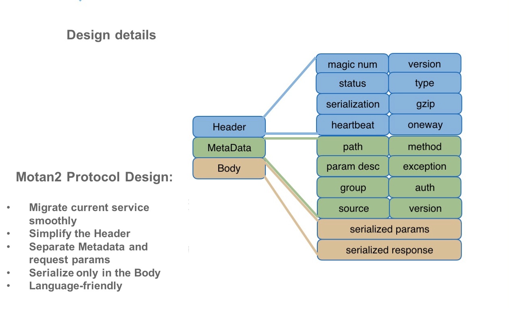

Implementation of cross-language calls by Dubbo2.js
dubbo2.js is a Dubbo client for node.js developped by Qianmiwang. It supports Dubbo's native protocol, which makes the RPC calls between javascript and java efficient and agile. This tool has been contributed to Dubbo's community.
Cross-language calls for micro service
Nowadays, Internet architecture tends to be micro-service way. The discussions about micro-service architecture becomes the most mentioned topic in different technical conferences. In China, most of the companies, such as Qianmiwang, choose Dubbo as their micro-servie architecture solution. As most of the internet companies, Qianmiwang uses various of programming languages. Java is for most of the backend services. Each business based on these backend can choose its own programming language such as go, python and javascript. Therefore, here comes a challenge, cross language calls. Some well mentioned solutions are as follows:
- Spring cloud. Spring cloud provides a set of components for micro-service development. It is based on HTTP protocol and is designed in the restful way, which makes it support cross-language calls. Other languages can call the services simply by implementing an HTTP interface.
- Service mesh. People call service mesh the next generation of micro-service framework. The core of this solution is SideCar. Even though the concept of SideCar changes a lot during the revolution of Service mesh, its main job never changed: providing reliable communication between different services.
- Motan. Motan is an open source cross-language service framework developped by Sina Weibo. Its early version only supports motan-java. However, as the new versions come out, more languages are supported in order to handle the cross-language problem. Its newest version(1.1.0) provides motan-go, motan-php, motan-openresty, etc. Similar to SideCar in Service mesh, Motan forwards messages by mortan-go, which can be considered as an agent. Meanwhile, motan2, its own protocol, is built for cross-language calls.
According to the solutions below, there are two ways to solve the cross-language calls problem:
- communicating by a common protocol.
- implementing an agent as a protocol adapter.
When a new team is choosing technical solutions, what I mentioned below could be our candidates. Meanwhile, the old system's compatibility and migration costs should also be considered. The first trial we did is to work on RPC protocol.
Cross-language calls by a common protocol
SpringMVC

Before achieving the real cross-language calls, the most common solution is to use the http protocol. We can call Dubbo provider indirectly by controller/restController provided by springmvc. This is easy to carry out, but there are lots of inconveniences. firstly, a call will go through too many nodes. Secondly, an extra communication layer (for http protocol) will be involved, but it could have been handled simply by the TCP protocol. Thirdly, we need to implement the RPC interface in the controller part. This will be extra work for developers.
We support some common protocols
Most of the service management frameworks support multiple protocols, dubbo as well. Besides its own protocol, the common protocols such as Dangdangwang's Rest protocol and Qianmiwang's json-rpc protocol are also supported.
The developers getting used to traditional RPC interfaces might feel uncomfortable while working on restful RPC interfaces. On the one hand, this is not good for rebuilding new interfaces. On the other hand, restful style might make these interfaces incompatible with the other protocols used by old interfaces. Of course, if there is no old system problems, using Rest protocol is the easiest implementation of cross-language calls, since most of the languages support it.
Even if Dubbo has tried on restful interface, the difference between rest architecture and RPC architecture should not be ignored. Rest architecture defines each resources, and it needs basic operations of http protocols such as GET, POST, DELETE, PUT. In my opinion, a Rest protocol is more for calls between different systems on the internet, while RPC is suitable for inner system calls. Similar to Rest protocol, json-rpc is also implemented by text sequence and http protocol. Using json-rpc can also solve the cross-language problems, meanwhile, it makes our solution compatible with old interfaces and there is no need to adapt to the restful style.
Json-rpc is Qianmiwang's early solution for cross-language protocol. They open-sourced their dubbo-client-py and dubbo-node-client, two clients based on json-rpc protocol. With these tools, we can easily call the rpc services provided by dubbo-provider-java with while using python or node.js. The inner system calls for java services are still mainly implemented by Dubbo protocol. In addition, in order to adapt the old system, two protocols could be configured.
<dubbo:protocol name="dubbo" port="20880" />
<dubbo:protocol name="jsonrpc" port="8080" />
Customized Protocols for Cross-language Support
The so-called protocol of the microservice framework can be simply interpreted as: message format and serialization scheme. Generally, the service governance framework would provide numbers of protocol configuration items for users to choose from. In addition to the above two common protocols,there exists some other customized protocols like the dubbo protocol, the default protocol for the dubbo framework, and Motan2, a cross-language protocol provided by the motan framework.
Motan2 for cross-language support

In the original Motan protocol, the protocol message consisted only of the Header and the Body, making deserialization indispensable for acquiring data stored in the Body, like path, param and group, which is terribly unfriendly for cross-language support. Therefore, the content of the protocol was modifiedin Motan2, Weibo released the open-source projects, motan-go, motan-php and motan-openresty. It used motan-go as an interpreter and the Simple serialization scheme to serialize the Body of protocol message. (Simple is a comparably weaker serialization scheme)

After observation we find out that there is no big difference between the configuration of Motan2 and the dual protocol. It’s just that the agent here is implicit, and it co-exists with the main service. The most obvious difference is that different languages do not interact directly in agent scheme.
Dubbo for cross-language support
Instead of cross-language support, the dubbo protocol was originally designed only for common rpc requests. However, it’s not always the case that we can only choose to support it or not. We can always choose to offer different levels of support. It may be hard to offer cross-language support based on the dubbo protocol, but not impossible. Actually, Qianmiwang succeeded. It conquered the front-end cross-language business field built by nodejs with dubbo2.js. It builds the bridge between Nodejs and the native dubbo protocol. Next, we will focus on what we can do with dubbo2.js.
Dubbo protocol message format:

Details in dubbo protocol header message:
- Magic: similar to magic number in Java bytes code files, which is used to determine whether it is a data pack of dubbo protocol. The magic number is the constant, 0xdabb.
- Flag: contains 8 bits. The lower four bits are used to indicate the type of serialization tool used for message body data (default hessian). Among the upper four bits, the 1 at first bit indicates request, the 1 at second bit indicates dual transfer, 1 at third bits indicates the heartbeat.
- Status: used toset response status. Dubbo defines some types for response. Details can be found in com.alibaba.dubbo.remoting.exchange.Response
- Invoke id: Message id,Type long, Unique indentifier for each request (Due to asynchronous communication, it is used to match the request to the corresponding returned response)
- Body length: message body length, type int,record bytes of body content.
- Body content: request param, where serializedresponse parameters are stored.
Protocol messages will eventually become bytes and be transmitted using TCP. Any language that supports network modules and has a socket will be able to be communicatedwith. Then, why cross-language support is difficult? There are two main obstaclesin calling service in Java using other languages:
- How can different languages represent data types in java, especially dynamiclanguages with possible non-strict data types?
- How to serialize string across language?
How does dubbo2.js solve problems?
We have analyzed two obstacles above. The key to dubbo2.js in solving these two problems depends on two class libraries: js-to-java，hessian.js. js-to-java, which makes nodejs have the ability to express Java objects. Hessian.js provides serialization capabilities. With the help of nodejs socket, and a duplicate set of dubbo protocol message format, we can finally achieve nodejs call to java-dubbo-provider.
Quick Start
To give an intuitive feeling to readers interested in dubbo2.js, this section presents a quick start example that shows how easy it is to call dubbo service using dubbo2.js.
1. Initiate dubbo-java-provider
Java provides the backend dubbo service. Firstly, let’s define the service interface:
public interface DemoProvider {
String sayHello(String name);
String echo() ;
void test();
UserResponse getUserInfo(UserRequest request);
}
Then we implement the interface:
public class DemoProviderImpl implements DemoProvider {
public String sayHello(String name) {
System.out.println("[" + new SimpleDateFormat("HH:mm:ss").format(new Date()) + "] Hello " + name + ", request from consumer: " + RpcContext.getContext().getRemoteAddress());
return "Hello " + name + ", response form provider: " + RpcContext.getContext().getLocalAddress();
}
@Override
public String echo() {
System.out.println("receive....");
return "pang";
}
@Override
public void test() {
System.out.println("test");
}
@Override
public UserResponse getUserInfo(UserRequest request) {
System.out.println(request);
UserResponse response = new UserResponse();
response.setStatus("ok");
Map<String, String> map = new HashMap<String, String>();
map.put("id", "1");
map.put("name", "test");
response.setInfo(map);
return response;
}
}
After that, we expose the dubbo service with xml files:
<?xml version="1.0" encoding="UTF-8"?>
<beans xmlns:xsi="http://www.w3.org/2001/XMLSchema-instance"
xmlns:dubbo="http://code.alibabatech.com/schema/dubbo"
xmlns="http://www.springframework.org/schema/beans"
xsi:schemaLocation="http://www.springframework.org/schema/beans http://www.springframework.org/schema/beans/spring-beans-2.5.xsd
http://code.alibabatech.com/schema/dubbo http://code.alibabatech.com/schema/dubbo/dubbo.xsd">
<!-- dubbo provider info, used to compute dependency -->
<dubbo:application name="demo-provider"/>
<dubbo:registry protocol="zookeeper" address="localhost:2181"/>
<!-- dubbo protocol, used to expose service at port 20880 -->
<dubbo:protocol name="dubbo" port="20880"/>
<!-- realize a service as a local bean -->
<bean id="demoProvider" class="com.alibaba.dubbo.demo.provider.DemoProviderImpl"/>
<!-- claim for service interfaces to expose -->
<dubbo:service interface="com.alibaba.dubbo.demo.DemoProvider" ref="demoProvider" version="1.0.0"/>
</beans>
After we implemented all the configurations on server side, initiate an object initiater to register a dubbo service locally:
public class Provider {
public static void main(String[] args) throws Exception {
ClassPathXmlApplicationContext context = new ClassPathXmlApplicationContext(new String[]{"META-INF/spring/dubbo-demo-provider.xml"});
context.start();
System.in.read();
}
}
2. Implement dubbo client-side for nodejs
Install dubbo2.js using npm:
npm install dubbo2.js --save
Configure dubboConfig.ts:
import { Dubbo, java, TDubboCallResult } from 'dubbo2.js'
const dubbo = new Dubbo({
application: {name: 'demo-provider'},
register: 'localhost:2181',
dubboVersion: '2.0.0',
interfaces: [
'com.alibaba.dubbo.demo.DemoProvider',
],
});
interface IDemoService {
sayHello(name: string): TDubboCallResult<string>;
}
export const demoService = dubbo.proxyService<IDemoService>({
dubboInterface: 'com.alibaba.dubbo.demo.DemoProvider',
version: '1.0.0',
methods: {
sayHello(name: string) {
return [java.String(name)];
},
echo() {},
test() {},
getUserInfo() {
return [
java.combine('com.alibaba.dubbo.demo.UserRequest', {
id: 1,
name: 'nodejs',
email: 'node@qianmi.com',
}),
];
},
},
});
Using typescript brings better coding experience.
Implement caller class main.ts：
import {demoService} from './dubboConfig'
demoService.sayHello('kirito').then(({res,err})=>{
console.log(res)
});
3. Call main.ts:
Run nodejs client in Debug mode:
DEBUG=dubbo* ts-node main.ts
Checkout running results:
Hello kirito, response form provider: 172.19.6.151:20880
Congratulations！
Features
- Support zookeeper as register center
- Support TCP Dubbo Native protocol
- Support directly Dubbo connection
- Support link tracing
- Generate dubbo interface Automatically
More details
The sample code in this article is available here, https://github.com/dubbo/dubbo2.js. If you don't know much about the dubbo protocol and want to understand how it works, the project provides a sub-moudle: java-socket-consumer, which is implemented in a process-oriented approach, realizing a process of sending dubbo protocal message with native socket and making function calls, and then get response.